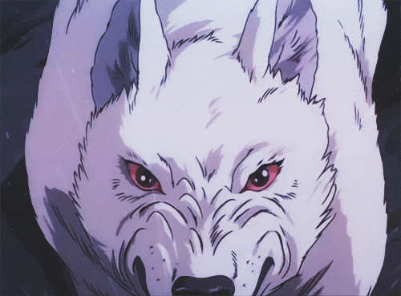

축하합니다!
빗자루 타기를 마스터한 당신은 배달업계 독보적 1위가 되어 부자가 됩니다.

겉으론 무뚝뚝해 보이지만 그 누구보다 순수한 마음을 지녔습니다.

왕자님 포스로 수 많은 여성과 소녀들의 마음을 사로잡은 당신은 만인의 첫사랑.
용맹하고 선한 성격에 더해 꽃미남이란 말을 대놓고 듣고 다니는 당신은 그야말로 사기 캐릭터.

특유의 밝은 모습이 주변 사람들을 기분 좋게 만듭니다.

당신은 사람 미치게 만드는 병약미소년 끝판왕입니다. 건강하세요.

공부도 잘 하고 얼굴도 잘생긴 당신은 엄친아의 정석입니다.
사람은 모르겠고 고양이들한텐 인기가 많겠어요.

동글뱅이 안경이 잘 어울리는 얼굴입니다.

당신은 학창시절 첫 사랑을 떠오르게 합니다.

주변에 한 명쯤 있을만한 성격 이상한 친구
사람들을 휘어잡는 성격과 외모로 주변에서 우러러봅니다.
누구보다 강인하고 단단한 당신은 전형적인 미인상으로 한번 당신과 마주친 사람은 쉽게 빠져나올 수 없습니다.

남을 도울 줄 알고 배려심이 깊은 당신은 괜히 장난치고 싶어지는 어릴 적 짝사랑을 닮았습니다.
화려한 공주 외모로 인기가 많지만 인간따윈 믿지 않는 당신.

시원하고 귀여운 외모로 모든이가 주머니에 넣고 다니고 싶어합니다.

팜므파탈 그 자체

주변에 한 명쯤 있을만한 밝은 친구

주변에 한 명쯤 있을만한 밝은 친구와 다니는 친구

새끼 물고기같은 당신

귀여움의 끝판왕입니다. 당신을 소유하려는 사람을 조심하세요.

존재감은 없지만 꼭 필요한 존재입니다.

바다 여신도 반할만한 매력적인 코를 가지셨군요!

어딜가도 여신 소리를 듣는 당신. 귀찮게 하는 남자들 때문에 피곤하시군요.

팔이 많아 효율성있는 삶을 보낼 수 있습니다.

그만 먹어
당신을 보면 무슨 생각을 하는지 알 수가 없군요.
매력적인 볼살을 가지셨군요!

무서워..

우량아로 태어나셨나봐요!

화끈한 성격의 소유자! 너무 과하면 주변에서 피할 수 있습니다!

짧은 머리가 잘 어울리는 당신! 한 번 빠지면 헤어나오기 어렵습니다.

당신의 호탕한 웃음에 내 마음을 빼았겼어요..

마을 버스만큼 매력있네요.

가족을 사랑하는 마음이 느껴지는 외모입니다.

약간 허수아비 닮으셨네요?

운동은 성인병 예방에 좋습니다!

건강 챙기세요!
누구세요?

용맹하지만 경계가 많아 보입니다.

등산할때 조심하세요!

처음 봤을 땐 경계가 되지만 알고보면 마음이 넓고 따뜻합니다. 사람들에게 다가가려고 노력해 보세요.
누구세요?
누구세요?
누구세요?

오지라퍼의 느낌이.. 조금.. 있습니다.
시원한 투블럭이 매력적인 당신! 알고보면 여심폭격기?!

괴팍한 성격탓에 주변에서 몰래 흉을 볼 수도 있습니다.
가르마가 매력적인 당신! 스타일을 좀 바꿔보는 건 어떨까요?

당신은 챙겨주고 보호해 주고 싶게 만드는군요.